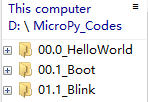
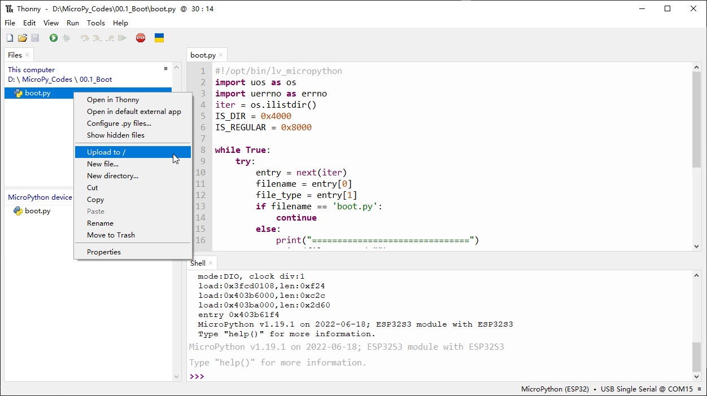

Chapter 1 LED (Important)
This chapter is the Start Point in the journey to build and explore ESP32-S3 WROOM electronic projects. We will start with simple “Blink” project.
Project 1.1 Blink
In this project, we will use ESP32-S3 WROOM to control blinking a common LED.
Power ESP32-S3 WROOM needs 5v power supply. In this tutorial, we need connect ESP32-S3 WROOM to computer via USB cable to power it and program it. We can also use other 5v power source to power it.
Component List
ESP32-S3 WROOM x1
USB cable x1
Component knowledge
LED
Resistor
Breadboard
Connect
Power ESP32-S3 WROOM needs 5v power supply. In this tutorial, we need connect ESP32-S3 WROOM to computer via USB cable to power it and program it. We can also use other 5v power source to power it.

In the following projects, we only use USB cable to power ESP32-S3 WROOM by def ault. In the whole tutorial, we don’t use T extension to power ESP32-S3 WROOM. So 5V and 3.3V (includeing EXT 3.3V) on the extension board are provided by ESP3 2-S3 WROOM. We can also use DC jack of extension board to power ESP32-S3 WROOM. In this way, 5v and EXT 3.3v on extension board are provided by external power resource.
Code
Codes used in this tutorial are saved in “Super_Starter_Kit_for_ESP32_S 3/Python/ Python_Codes”. You can move the codes to any location. For example, we save the codes in Disk(D) with the path of “D:/Micropython_Codes”.
01.1_Blink Open “Thonny”，click “This computer”>>“D:”>>“Micropython_Codes”.
Expand folder “01.1_Blink” and double click “Blink.py” to open it. As shown in the illustration below.

Make sure ESP32-S3 has been connected with the computer with ESP32-S3 correctly. Click “Stop/Restart backend” or press the reset button, and then wait to see what interface will sho w up.

Click “Run current script” shown in the box above，the code starts to be executed and the LED in the circuit starts to blink.
Note
This is the code running online. If you disconnect USB cable and repower ESP32-S3 or press its reset key, LED stops blinking and the following messages will be displayed in Thonny.
Uploading code to ESP32S3
As shown in the following illustration, right-click the file Blink.py and select “Upload to /” to upload code to ESP32S3.

Upload boot.py in the same way.


Press the reset key of ESP32-S3 and you can see LED is ON for one second and then OFF for one second, which repeats in an endless loop.
If you want to exit the offline operation mode, you can press Ctrl+C at the same time in the shell to let the ESP32-S3 exit the offline operation mode.

If there is no response after pressing, it is recommended to press again until exiting.
from time import sleep_ms
from machine import Pin
led=Pin(2,Pin.OUT) #create LED object from pin2,Set Pin2 to output
try:
while True:
led.value(1) #Set led turn on
sleep_ms(200)
led.value(0) #Set led turn off
sleep_ms(200)
except:
pass
Project 1.2 Blink
In this project, we will use ESP32-S3 WROOM to control blinking a common LED.
Component List
ESP32-S3-WROOM x1
GPIO Extension Board x1
830 Tie-Points Breadboard x1
LED x1
Resistor 220Ω x1
Jumper Wire x2
Connect

Code
Codes used in this tutorial are saved in “Super_Starter_Kit_for_ESP32_S 3/Python/ Python_Codes”. You can move the codes to any location. For example, we save the codes in Disk(D) with the path of “D:/Micropython_Codes”.
01.1_Blink Open “Thonny”，click “This computer”>>“D:”>>“Micropython_Codes”.
Expand folder “01.1_Blink” and double click “Blink.py” to open it. As shown in the illustration below.
Make sure ESP32-S3 has been connected with the computer with ESP32-S3 correctly. Click “Stop/Restart backend” or press the reset button, and then wait to see what interface will show up.
Click “Run current script” shown in the box above，the code starts to be executed and the LED in the circuit starts to blink.
Note
This is the code running online. If you disconnect USB cable and repower ESP32-S3 or press its reset key, LED stops blinking and the following messages will be displayed in Thonny
Uploading code to ESP32S3 As shown in the following illustration, right-click the file Blink.py and select “Upload to /” to upload code to ESP32S3.
Upload boot.py in the same way.
Press the reset key of ESP32-S3 and you can see LED is ON for one second and then OFF for one second, which repeats in an endless loop. Press the reset key of ESP32-S3 and you can see LED is ON for one second and then OFF for one second, which repeats in an endless loop.
If you want to exit the offline operation mode, you can press Ctrl+C at the same time in the shell to let the ESP32-S3 exit the offline operation mode.
If there is no response after pressing, it is recommended to press again until exiting.